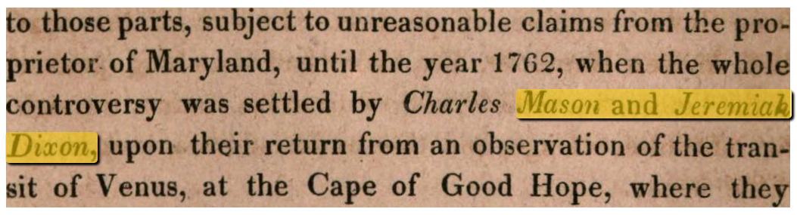

Solr OCR Highlighting

This Solr plugin lets you put word-level OCR text into one or more of you documents’ fields and then allows you to obtain structured highlighting data with the text and its position on the page at query time:
{
"text": "to those parts, subject to unreasonable claims from the proprietor "
"of Maryland, until the year 17C2, when the whole controversy was "
"settled by Charles <em>Mason and Jeremiah Dixon</em>, upon their "
"return from an observation of the transit of Venus, at the Cape of "
"Good Hope, where they",
"score": 5555104.5,
"pages": [
{ "id": "page_380", "width": 1436, "height": 2427 }
],
"regions": [
{ "ulx": 196, "uly": 1703, "lrx": 1232, "lry": 1968, "pageIdx": 0 }
],
"highlights":[
[{ "text": "Mason and Jeremiah", "ulx": 675, "uly": 110, "lrx": 1036, "lry": 145,
"parentRegionIdx": 0},
{ "text": "Dixon,", "ulx": 1, "uly": 167, "lrx": 119, "lry": 204,
"parentRegionIdx": 0 }]
]
}
All this is done without having to store any OCR text in the index itself: The plugin can lazy-load only the parts required for highlighting at both index and query time from your original OCR input documents.
It works by extending Solr’s standard UnifiedHighlighter with support for
loading external field values and determining OCR positions from those field
values. This means that most options and query types supported by the
UnifiedHighlighter are also supported for OCR highlighting. The plugin also
does not interfere with Solr’s standard highlighting component, i.e. it works
transparently with non-OCR fields and just lets the default implementation handle
those.
The plugin works with all Solr versions >= 7.x.
Features
- Index various OCR formats directly without any pre-processing
- Retrieve all the information needed to render a highlighted snippet view directly from Solr, without post-processing
- Keep your index size manageable by optionally re-using OCR documents on disk for highlighting
Getting Started
To get started setting up OCR highlighting for your Solr server, head over to the Installation Instructions.
If you want to see the plugin in action, you can play around with the example setup hosted at https://ocrhl.jbaiter.de
Should you want to run the example on your own computer and play around with the settings, the Docker-based setup is available on GitHub and instructions for using it are in the Example Setup chapter